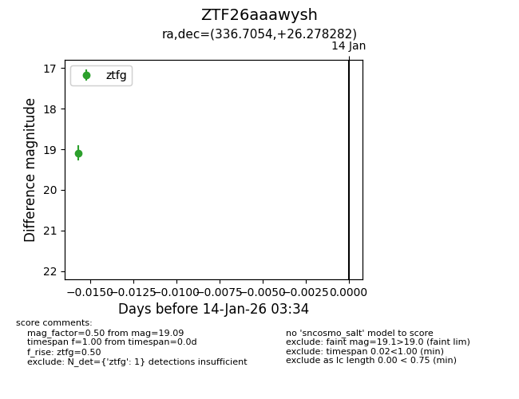
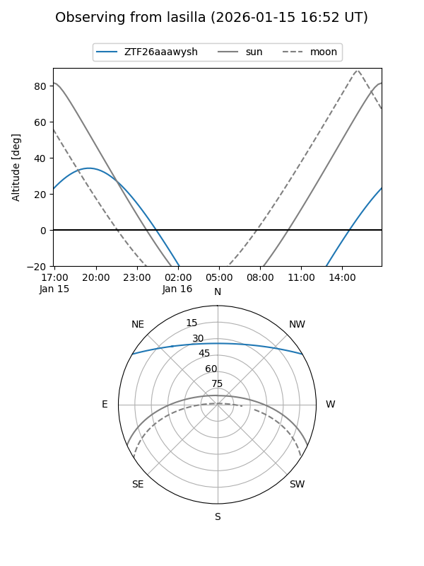
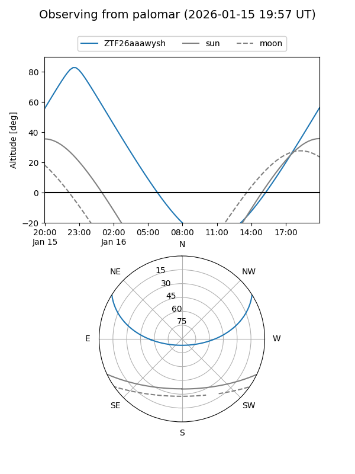

ZTF26aaawysh
Target ZTF26aaawysh at 2026-01-14 03:35
Aliases and brokers:
FINK: link
Lasair: link
ALeRCE: link
alt names
ZTF26aaawysh (ztf,fink_ztf)
Coordinates:
equatorial (ra, dec) = 336.7054,+26.27828
equatorial (HMS+DMS) = 22:26:49.29,+26:16:41.82
galactic (l, b) = (86.7840,-26.26112)
Flags:
Photometry:
last ztfg=19.09
1 ztfg detections
Lightcurve

Visibility


Additional plots